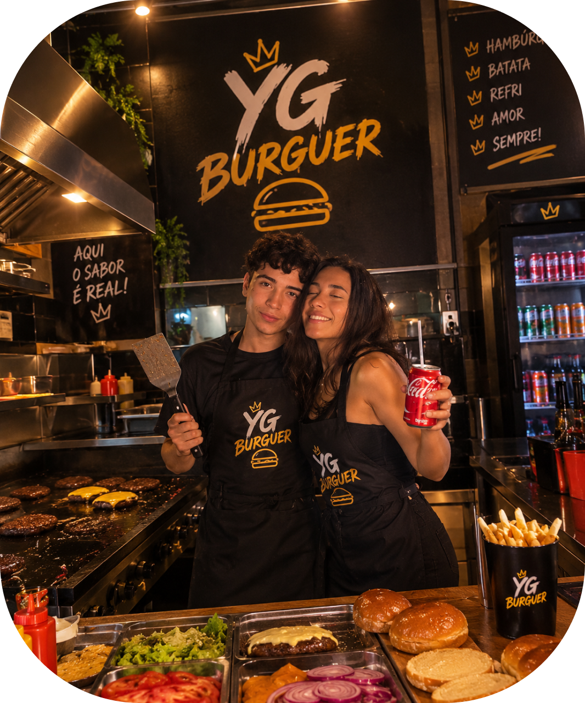

TODA GRANDE IDEIA COMEÇA DE ALGUM LUGAR.
A YG Burguer nasceu de uma ideia que surgiu na escola e, aos poucos, se transformou em um sonho.
Tudo começou com uma conversa entre Yasmin e Gabriel, amigos de infância que imaginaram como seria ter a própria hamburgueria.
Os dois decidiram unir suas ideias e criar um lugar onde os hambúrgueres fossem preparados com carinho, qualidade e ingredientes selecionados.
Foi assim que nasceu a YG Burguer: muito mais que um lugar para comer, mas um espaço para compartilhar histórias, momentos e experiências.
UMA IDEIA.
UM SABOR. UMA HISTÓRIA.
O NOSSO JEITO DE FAZER O MELHOR.
DE UMA IDEIA NA ESCOLA,
A UM SONHO NA MESA.
A YG Burguer representa mais do que vender hambúrgueres. Representa a coragem de tirar uma ideia do papel, a vontade de empreender e a determinação de construir algo nosso.
Cada detalhe é pensado para oferecer uma experiência saborosa, com dedicação e carinho. Cada lanche que preparamos representa um pouco da nossa história.
Nosso objetivo é crescer, conquistar clientes e proporcionar bons momentos, sempre compartilhando uma marca reconhecida pelo sabor e pela qualidade.
Afinal, toda grande história começa com uma ideia — e a nossa começou na escola.